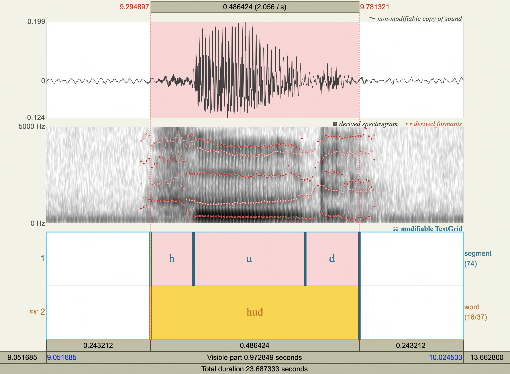

Acoustics and audition#
[3]
LING 497 Phonetic Analysis: Articulation, Acoustics, Audition
The Pennsylvania State University
Revised
25 May 2023
Vowel Spectrograms#



Formant Data#
Observations#
Show code cell source
import numpy as np
import pandas as pd
obs = pd.DataFrame(
data=[
['hæd','æ',772.2623598361888 ,1731.6866205977226],
['hɛd','ɛ',574.208631287283 ,1918.637682685363 ],
['hid','i',305.92339403193955,2458.4996663060283],
['hɪd','ɪ',453.5730951234637 ,2072.92348845572 ],
['hɑd','ɑ',714.6610521359538 ,1214.4713341175295],
['hʊd','ʊ',476.80292121316353,1338.2178121189354],
['hʌd','ʌ',618.9116494455797 ,1425.8562296798175],
['hud','u',318.0286268276335 ,1095.993125792178 ],
['hɔd','ɔ',610.8859754665131 ,935.5714048615686 ],
['bæt','æ',812.4152837356295 ,1702.1079409783133],
['bɛd','ɛ',534.3448157343192 ,1891.7585442888867],
['bid','i',289.82041231188634,2429.2999144902774],
['bɪd','ɪ',450.1635653561586 ,2009.4880143110365],
['bɑd','ɑ',708.1091727260111 ,1189.9926250011079],
['bʊk','ʊ',497.65304819673605,1020.9113547201716],
['bʌd','ʌ',606.6914116015801 ,1372.059084614637 ],
['bud','u',323.43445114657317,1264.2416721859588],
['bɔt','ɔ',636.7402932330717 ,994.824262278683 ],
],
columns=[
'word',
'vowel',
'F1_Hz',
'F2_Hz',
],
)
obs.drop(columns=['word']) \
.set_index(keys=['vowel']) \
.to_csv('lab3_obs.csv')
obs.round(2)
Error in parse(text = x, srcfile = src): <text>:1:8: unexpected symbol
1: import numpy
^
Traceback:
Averages [Hz, acoustic frequency]#
Show code cell source
avg = obs.drop(columns=['word']) \
.groupby(by=['vowel']) \
.mean() \
.round(2)
avg.to_csv('lab3_avg.csv')
avg
| F1_Hz | F2_Hz | |
|---|---|---|
| vowel | ||
| i | 297.87 | 2443.90 |
| u | 320.73 | 1180.12 |
| æ | 792.34 | 1716.90 |
| ɑ | 711.39 | 1202.23 |
| ɔ | 623.81 | 965.20 |
| ɛ | 554.28 | 1905.20 |
| ɪ | 451.87 | 2041.21 |
| ʊ | 487.23 | 1179.56 |
| ʌ | 612.80 | 1398.96 |
Averages [barks, auditory frequency]#
\( \begin{aligned} \text{bark}=6\sinh^{-1}\left(\frac{f}{600}\right) \end{aligned} \)
Show code cell source
def freq_to_bark (freq : float) -> float:
bark = 6*np.arcsinh(freq/600)
return bark
avg['F1_bark'] = avg['F1_Hz'].apply(freq_to_bark)
avg['F2_bark'] = avg['F2_Hz'].apply(freq_to_bark)
avg.drop(columns=['F1_Hz','F2_Hz']).to_csv('lab3_bark.csv')
avg.drop(columns=['F1_Hz','F2_Hz'])
| F1_bark | F2_bark | |
|---|---|---|
| vowel | ||
| i | 2.868206 | 12.673842 |
| u | 3.071393 | 8.572313 |
| æ | 6.545572 | 10.642287 |
| ɑ | 6.040524 | 8.671778 |
| ɔ | 5.454945 | 7.521406 |
| ɛ | 4.958718 | 11.234881 |
| ɪ | 4.173832 | 11.630689 |
| ʊ | 4.452301 | 8.569775 |
| ʌ | 5.378270 | 9.496836 |
Plotting the data using R#
.libPaths()
'/Library/Frameworks/R.framework/Versions/4.2-arm64/Resources/library'
Show code cell source
packages <- c(
'ggplot2',
'readr',
'dplyr',
'tidyverse',
'scales',
'repr',
'phonR',
'vowels',
'magrittr'
)
# Install packages not yet installed
installed_packages <- packages %in% rownames(installed.packages())
if (any(installed_packages == FALSE)) {
install.packages(packages[!installed_packages])
}
# Load packages
invisible(lapply(packages, library, character.only = TRUE))
Attaching package: ‘dplyr’
The following objects are masked from ‘package:stats’:
filter, lag
The following objects are masked from ‘package:base’:
intersect, setdiff, setequal, union
── Attaching packages ─────────────────────────────────────── tidyverse 1.3.2 ──
✔ tibble 3.1.7 ✔ stringr 1.4.0
✔ tidyr 1.2.0 ✔ forcats 0.5.1
✔ purrr 0.3.4
── Conflicts ────────────────────────────────────────── tidyverse_conflicts() ──
✖ dplyr::filter() masks stats::filter()
✖ dplyr::lag() masks stats::lag()
Attaching package: ‘scales’
The following object is masked from ‘package:purrr’:
discard
The following object is masked from ‘package:readr’:
col_factor
Attaching package: ‘magrittr’
The following object is masked from ‘package:purrr’:
set_names
The following object is masked from ‘package:tidyr’:
extract
Observations [Hz]#
obs <- read.csv('lab3_obs.csv')
obs
| vowel | F1_Hz | F2_Hz |
|---|---|---|
| <chr> | <dbl> | <dbl> |
| æ | 772.2624 | 1731.6866 |
| ɛ | 574.2086 | 1918.6377 |
| i | 305.9234 | 2458.4997 |
| ɪ | 453.5731 | 2072.9235 |
| ɑ | 714.6611 | 1214.4713 |
| ʊ | 476.8029 | 1338.2178 |
| ʌ | 618.9116 | 1425.8562 |
| u | 318.0286 | 1095.9931 |
| ɔ | 610.8860 | 935.5714 |
| æ | 812.4153 | 1702.1079 |
| ɛ | 534.3448 | 1891.7585 |
| i | 289.8204 | 2429.2999 |
| ɪ | 450.1636 | 2009.4880 |
| ɑ | 708.1092 | 1189.9926 |
| ʊ | 497.6530 | 1020.9114 |
| ʌ | 606.6914 | 1372.0591 |
| u | 323.4345 | 1264.2417 |
| ɔ | 636.7403 | 994.8243 |
Show code cell source
options(repr.plot.width=10, repr.plot.height=10)
plt <- ggplot(obs, aes(x=F2_Hz, y=F1_Hz, label=vowel, color=vowel)) +
geom_text(size=10) +
scale_x_reverse(
position='bottom',
breaks=seq(0, 3000, 200)) +
scale_y_reverse(
position='left',
breaks=seq(0, 1000, 100)) +
labs(
x='F2 [Hz]\n',
y='F1 [Hz]\n',
title='Observed F1 vs F2') +
theme(
legend.position='none',
plot.title=element_text(hjust=0.5),
text=element_text(size=20)
)
suppressWarnings(print(plt))
{kind=link}
Averages [Hz]#
avg <- read.csv('lab3_avg.csv')
avg
| vowel | F1_Hz | F2_Hz |
|---|---|---|
| <chr> | <dbl> | <dbl> |
| i | 297.87 | 2443.90 |
| u | 320.73 | 1180.12 |
| æ | 792.34 | 1716.90 |
| ɑ | 711.39 | 1202.23 |
| ɔ | 623.81 | 965.20 |
| ɛ | 554.28 | 1905.20 |
| ɪ | 451.87 | 2041.21 |
| ʊ | 487.23 | 1179.56 |
| ʌ | 612.80 | 1398.96 |
Show code cell source
options(repr.plot.width=10, repr.plot.height=10)
plt <- ggplot(avg, aes(x=F2_Hz, y=F1_Hz, label=vowel, color=vowel)) +
geom_text(size=10) +
scale_x_reverse(
position='bottom',
breaks=seq(0, 3000, 200)) +
scale_y_reverse(
position='left',
breaks=seq(0, 1000, 100)) +
labs(
x='F2 [Hz]\n',
y='F1 [Hz]\n',
title='Averaged F1 vs F2') +
theme(
legend.position='none',
plot.title=element_text(hjust=0.5),
text=element_text(size=20)
)
suppressWarnings(print(plt))
{kind=link}
Averages [barks]#
barks <- read.csv('lab3_bark.csv')
barks
| vowel | F1_bark | F2_bark |
|---|---|---|
| <chr> | <dbl> | <dbl> |
| i | 2.868206 | 12.673842 |
| u | 3.071393 | 8.572313 |
| æ | 6.545572 | 10.642287 |
| ɑ | 6.040524 | 8.671778 |
| ɔ | 5.454945 | 7.521406 |
| ɛ | 4.958718 | 11.234881 |
| ɪ | 4.173832 | 11.630689 |
| ʊ | 4.452301 | 8.569775 |
| ʌ | 5.378270 | 9.496836 |
Show code cell source
options(repr.plot.width=10, repr.plot.height=10)
plt <- ggplot(barks, aes(x=F2_bark, y=F1_bark, label=vowel, color=vowel)) +
geom_text(size=10) +
scale_x_reverse(
position='bottom') +
scale_y_reverse(
position='left') +
labs(
x='F2 [barks]\n',
y='F1 [barks]\n',
title='Averaged F1 vs F2') +
theme(
legend.position='none',
plot.title=element_text(hjust=0.5),
text=element_text(size=20)
)
suppressWarnings(print(plt))
{kind=link}
Hz vs Barks#
Simulating a larger data set#
set.seed(10)
vowels = data.frame(
vowel = rep(c('a', 'e', 'i', 'o', 'u'), each=50),
F1 = c(rnorm(50, mean=800, sd=100),
rnorm(50, mean=600, sd=100),
rnorm(50, mean=350, sd=100),
rnorm(50, mean=600, sd=100),
rnorm(50, mean=350, sd=100)),
F2 = c(rnorm(50, mean=1500, sd=150),
rnorm(50, mean=2000, sd=150),
rnorm(50, mean=2500, sd=150),
rnorm(50, mean=1000, sd=150),
rnorm(50, mean=800, sd=150))
)
vowels
| vowel | F1 | F2 |
|---|---|---|
| <chr> | <dbl> | <dbl> |
| a | 801.8746 | 1661.684 |
| a | 781.5747 | 1639.767 |
| a | 662.8669 | 1280.881 |
| a | 740.0832 | 1364.089 |
| a | 829.4545 | 1397.948 |
| a | 838.9794 | 1659.475 |
| a | 679.1924 | 1396.138 |
| a | 763.6324 | 1329.956 |
| a | 637.3327 | 1335.808 |
| a | 774.3522 | 1348.064 |
| a | 910.1780 | 1561.542 |
| a | 875.5782 | 1571.661 |
| a | 776.1766 | 1150.518 |
| a | 898.7445 | 1502.438 |
| a | 874.1390 | 1647.053 |
| a | 808.9347 | 1620.952 |
| a | 704.5056 | 1517.940 |
| a | 780.4850 | 1134.508 |
| a | 892.5521 | 1504.653 |
| a | 848.2979 | 1449.638 |
| a | 740.3689 | 1460.434 |
| a | 581.4713 | 1446.622 |
| a | 732.5134 | 1427.827 |
| a | 588.0939 | 1533.410 |
| a | 673.4802 | 1864.487 |
| a | 762.6338 | 1724.445 |
| a | 731.2445 | 1392.419 |
| a | 712.7841 | 1429.942 |
| a | 789.8239 | 1599.439 |
| a | 774.6219 | 1845.027 |
| ⋮ | ⋮ | ⋮ |
| u | 317.0775 | 719.0060 |
| u | 321.7178 | 511.1535 |
| u | 393.2429 | 951.1747 |
| u | 319.2393 | 758.1148 |
| u | 344.3364 | 612.5651 |
| u | 423.3515 | 987.2737 |
| u | 359.7312 | 771.1680 |
| u | 513.0892 | 936.7964 |
| u | 406.0611 | 476.2595 |
| u | 482.9565 | 993.4416 |
| u | 322.1177 | 735.7835 |
| u | 223.3268 | 761.7496 |
| u | 325.0852 | 999.0737 |
| u | 351.7988 | 925.8035 |
| u | 387.7073 | 580.2499 |
| u | 429.6009 | 707.5621 |
| u | 265.9323 | 815.9159 |
| u | 129.4528 | 523.3975 |
| u | 237.1944 | 557.5366 |
| u | 215.8690 | 834.1515 |
| u | 510.5114 | 938.1825 |
| u | 424.4424 | 750.3195 |
| u | 436.2082 | 993.0851 |
| u | 389.5156 | 808.5891 |
| u | 400.9119 | 469.4100 |
| u | 337.7450 | 721.5634 |
| u | 359.2585 | 962.1178 |
| u | 314.2120 | 763.5288 |
| u | 314.0345 | 663.5830 |
| u | 452.8571 | 669.7551 |
Show code cell source
options(repr.plot.width=10, repr.plot.height=10)
plt <- ggplot(data=vowels, aes(x=F2, y=F1, color=vowel, label=vowel))+
geom_text(size=8)+
coord_cartesian(
xlim=c(3000, 200),
ylim=c(1000, 100))+
theme(
legend.position='none',
plot.title=element_text(hjust=0.5),
text=element_text(size=18))
plt
{kind=link}
Show code cell source
options(repr.plot.width=10, repr.plot.height=10)
plt <- ggplot(data=vowels, aes(x=F2, y=F1, color=vowel, label=vowel))+
geom_text(size=8)+
scale_x_reverse(
position='bottom',
breaks=seq(200, 3000, 500))+
scale_y_reverse(
position='left',
breaks=seq(100, 1000, 250))+
labs(
x='F2 [Hz]\n',
y='F1 [Hz]\n',
title='Density')+
geom_density_2d(alpha=0.3)+
coord_cartesian(
xlim=c(3000, 200),
ylim=c(1000, 100))+
theme(
legend.position='none',
plot.title=element_text(hjust=0.5),
text=element_text(size=18))
plt
{kind=link}
Show code cell source
options(repr.plot.width=10, repr.plot.height=10)
plt <- ggplot(data=vowels, aes(x=F2, y=F1, color=vowel, label=vowel))+
geom_text(size=8)+
scale_x_reverse(
position='bottom',
breaks=seq(200, 3000, 500))+
scale_y_reverse(
position='left',
breaks=seq(100, 1000, 250))+
labs(
x='F2 [Hz]\n',
y='F1 [Hz]\n',
title='')+
stat_ellipse(type='norm', alpha=0.3)+
coord_cartesian(
xlim=c(3000, 200),
ylim=c(1000, 100))+
theme(
legend.position='none',
plot.title=element_text(hjust=0.5),
text=element_text(size=18))
plt
{kind=link}
means <- vowels %>% group_by(vowel) %>% summarize(meanF1=mean(F1),
meanF2=mean(F2),
seF1=sd(F1)/sqrt(n()),
seF2=sd(F2)/sqrt(n()))
means
| vowel | meanF1 | meanF2 | seF1 | seF2 |
|---|---|---|---|---|
| <chr> | <dbl> | <dbl> | <dbl> | <dbl> |
| a | 765.8705 | 1506.9400 | 12.25285 | 21.84624 |
| e | 606.8198 | 2042.9371 | 13.81097 | 20.84642 |
| i | 352.4042 | 2516.7145 | 13.74746 | 23.33361 |
| o | 578.6033 | 1008.8288 | 13.60189 | 23.78942 |
| u | 351.1237 | 776.0376 | 13.04699 | 24.21912 |
options(repr.plot.width=10, repr.plot.height=10)
plt <- ggplot(data=means, aes(x=meanF2, y=meanF1, color=vowel, label=vowel))+
geom_errorbar(aes(ymin=meanF1-seF1, ymax=meanF1+seF1), width=0)+
geom_errorbarh(aes(xmin=meanF2-seF2, xmax=meanF2+seF2), height=0)+
geom_text(position=position_nudge(x=50, y=50), size=8)+
scale_x_reverse(
position='bottom',
breaks=seq(200, 3000, 500))+
scale_y_reverse(
position='left',
breaks=seq(100, 1000, 250))+
labs(
x='F2 [Hz]\n',
y='F1 [Hz]\n',
title='')+
coord_cartesian(
xlim=c(3000, 200),
ylim=c(1000, 100))+
theme(
legend.position='none',
plot.title=element_text(hjust=0.5),
text=element_text(size=18))
plt
{kind=link}
Show code cell source
options(repr.plot.width=10, repr.plot.height=10)
plt <- ggplot(data=means, aes(x=meanF2, y=meanF1, color=vowel, label=vowel))+
geom_text(size=8)+
scale_x_reverse(
position='bottom',
breaks=seq(200, 3000, 500))+
scale_y_reverse(
position='left',
breaks=seq(100, 1000, 250))+
labs(
x='F2 [Hz]\n',
y='F1 [Hz]\n',
title='')+
stat_ellipse(data=vowels, aes(x=F2, y=F1), type='norm')+
coord_cartesian(
xlim=c(3000, 200),
ylim=c(1000, 100))+
theme(
legend.position='none',
plot.title=element_text(hjust=0.5),
text=element_text(size=18))
plt
{kind=link}